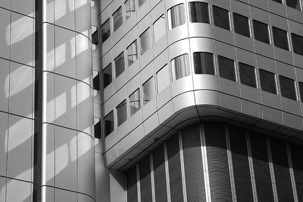
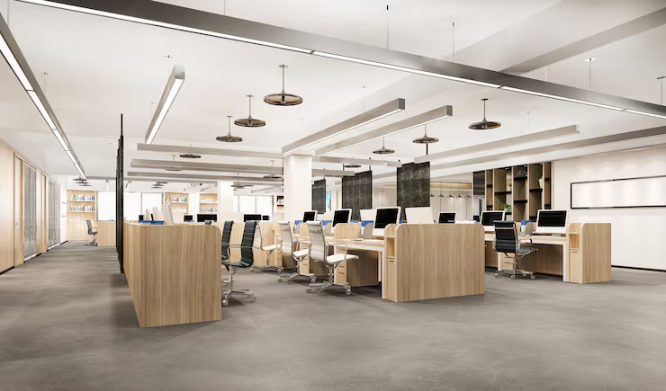
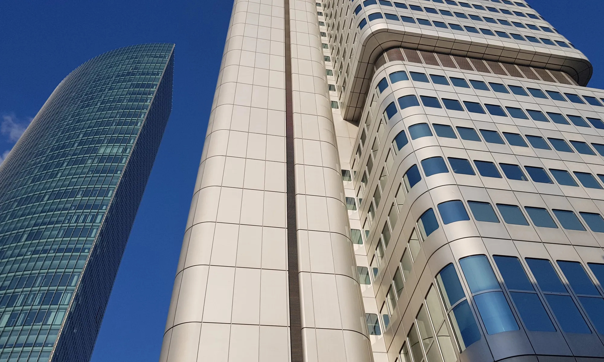

Radius Tower
Shenzhen, China - 2019
The Radius Tower, a prominent skyscraper in Shenzhen, China, is a masterclass in modern structural design and urban integration. Characterized by its unique, segmented geometry and smooth, rounded apertures, the tower presents a striking contrast to the sharp, glass-heavy profiles of its neighboring skyscrapers. The building features a distinctive series of stacked, modular volumes with softened corners, giving it a tactile, almost sculpted quality that sets it apart in Shenzhen’s rapidly evolving skyline. Its exterior is clad in high-performance, light-toned composite panels that shift in appearance under the city’s humid subtropical light, ranging from a crisp, matte white to a warm, reflective silver.
The tower’s most identifying architectural trait is its radial symmetry and the rhythmic placement of its panoramic windows. Unlike standard curtain walls, the Radius Tower utilizes deep-set, arched glazing that provides natural solar shading while framing expansive views of the surrounding business district. This design is not merely aesthetic; it serves as a functional "pleated" skin that reduces solar heat gain by up to 30%, embodying a philosophy of "engineering without engines". This sustainable approach allows the building to maximize natural daylight while maintaining interior thermal comfort in China’s tech and innovation hub.
At the street level, the Radius Tower anchors a vibrant mixed-use precinct, connecting seamlessly to Shenzhen’s greenbelts and public transit networks. The base often features a grand, transparent atrium that acts as a social "city in the sky," accommodating thousands of professionals in a healthy, smart environment. As the tower reaches its peak, the structural lines converge into a singular, iconic silhouette, often housing observation decks or exclusive sky halls that offer a cathedral-like experience for visitors. It stands not just as an office building, but as a visual icon of growth and a symbol of Shenzhen’s stature as a leading global technology city.



